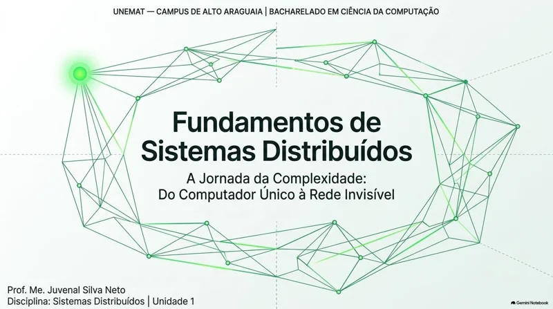
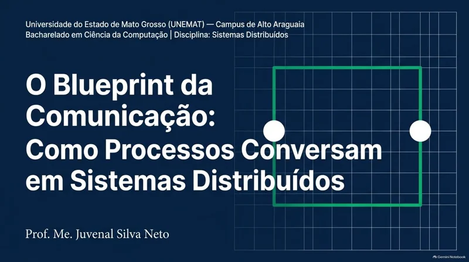
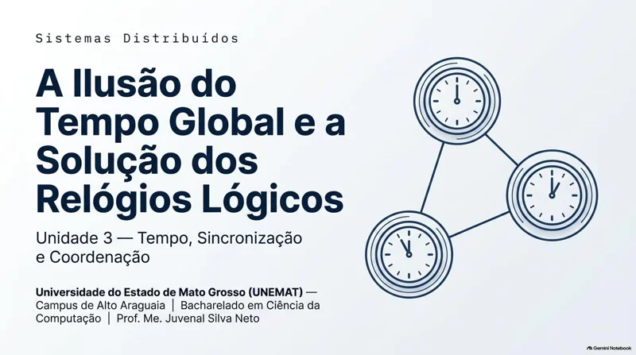
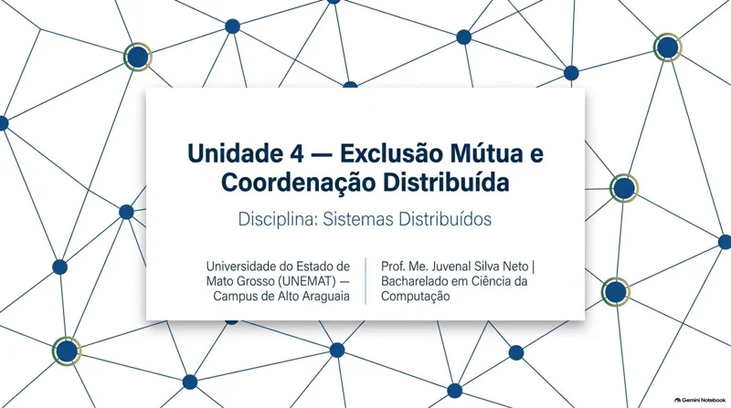
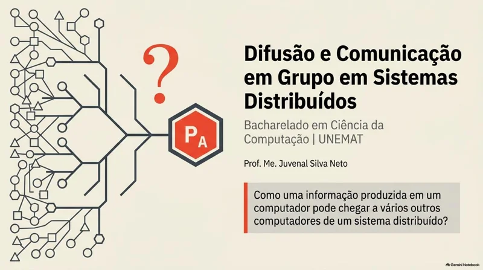
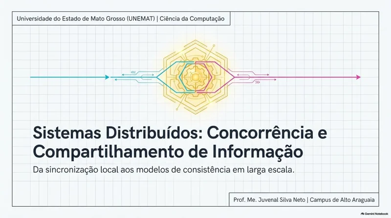
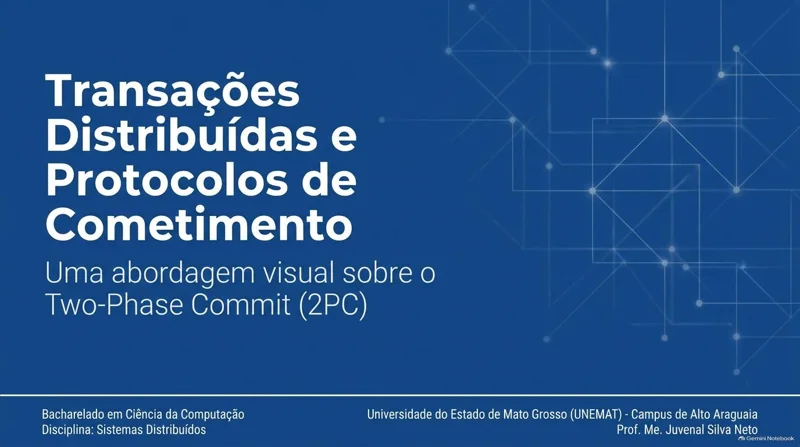
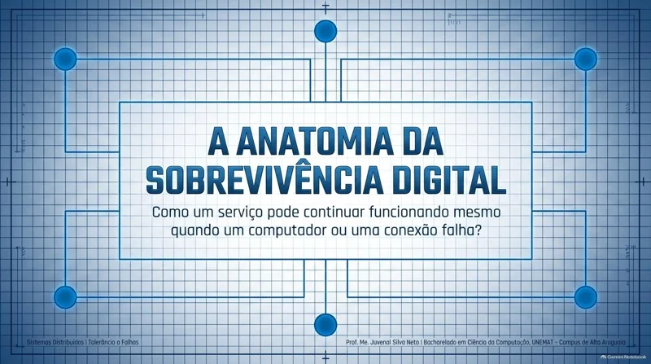
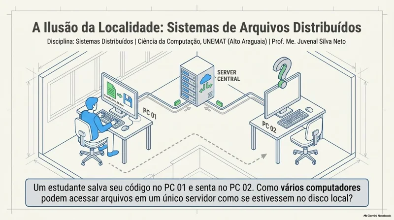
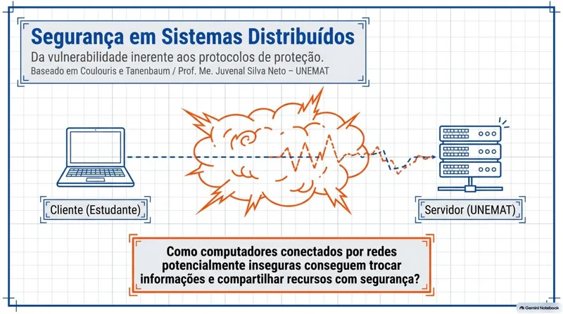

BACHARELADO EM CIÊNCIA DA COMPUTAÇÃO
Sistemas
Distribuídos.
Entenda como processos cooperam
através de uma rede.
Os materiais teóricos da disciplina, organizados em um percurso de estudo: da comunicação entre processos à segurança e à tolerância a falhas.
Comunicar. Coordenar. Compartilhar.
Seu material, sempre à mão. Abra os PDFs em uma nova aba ou baixe os arquivos para estudar offline.
Fundamentos de sistemas distribuídos
Vários computadores, um sistema.
Conheça os conceitos e desafios de sistemas formados por processos que cooperam pela rede. Explore os modelos, a transparência e as diferenças em relação aos sistemas centralizados.
- Modelos de sistemas
- Transparência
- Desafios da distribuição

Materiais para estudo Na sequência das aulas
Fundamentos de sistemas distribuídos
Conceitos, características e desafios dos sistemas distribuídos.
Comunicação entre processos
A troca de mensagens como ponto de partida.
Estude como processos em máquinas distintas trocam informações. Relacione os mecanismos de comunicação às necessidades de cooperação das aplicações distribuídas.
- IPC
- Troca de mensagens
- Comunicação pela rede

Materiais para estudo Na sequência das aulas
Comunicação entre processos
Mecanismos e modelos de comunicação entre processos distribuídos.
Tempo, sincronização e ordenação
Como ordenar eventos sem um relógio global.
Investigue por que o tempo é um desafio em ambientes distribuídos. Estude sincronização e ordenação de eventos para compreender a relação entre causalidade e execução concorrente.
- Relógios
- Sincronização
- Ordenação de eventos

Materiais para estudo Na sequência das aulas
Tempo, sincronização e ordenação
Tempo físico e lógico, sincronização e relações entre eventos.
Coordenação distribuída
Decisões em conjunto.
Explore os mecanismos usados por processos para coordenar suas ações. Entenda os desafios de organizar decisões e acesso a recursos quando o controle está distribuído.
- Coordenação
- Exclusão mútua
- Eleição

Materiais para estudo Na sequência das aulas
Coordenação distribuída
Algoritmos e mecanismos para coordenar processos distribuídos.
Difusão e comunicação em grupo
Uma mensagem, vários participantes.
Passe da comunicação entre pares para a comunicação em grupo. Examine a difusão de mensagens e as garantias necessárias para que os participantes mantenham uma visão coerente dos eventos.
- Grupos
- Difusão de mensagens
- Garantias de entrega

Materiais para estudo Na sequência das aulas
Difusão e comunicação em grupo
Modelos e garantias de comunicação entre múltiplos processos.
Concorrência e compartilhamento de informação
Cooperar também exige controlar o acesso.
Entenda os desafios do acesso simultâneo à informação distribuída. Relacione concorrência, compartilhamento e consistência para analisar como preservar a coerência dos dados.
- Concorrência
- Compartilhamento
- Consistência

Materiais para estudo Na sequência das aulas
Concorrência e compartilhamento de informação
Acesso concorrente e organização de informações compartilhadas.
Transações distribuídas
Uma operação que atravessa várias máquinas.
Estude como coordenar operações que envolvem diferentes participantes. Acompanhe o protocolo de confirmação em duas fases e seus desafios diante de falhas de comunicação ou de processos.
- Transações
- Atomicidade
- Protocolo 2PC

Materiais para estudo Na sequência das aulas
Transações distribuídas e protocolo 2PC
Coordenação da confirmação de transações entre participantes distribuídos.
Tolerância a falhas
Continuar quando uma parte falha.
Investigue os tipos de falhas e os mecanismos usados para manter serviços disponíveis. Relacione detecção, redundância e recuperação às garantias de funcionamento do sistema.
- Modelos de falhas
- Redundância
- Recuperação

Materiais para estudo Na sequência das aulas
Tolerância a falhas
Estratégias para lidar com falhas em sistemas distribuídos.
Arquivos, nomes e memória compartilhada
Serviços que conectam recursos distribuídos.
Conheça três formas de organizar e acessar recursos em múltiplas máquinas: sistemas de arquivos, serviços de nomes e memória compartilhada distribuída. Relacione essas abstrações à localização e ao compartilhamento da informação.
- Arquivos distribuídos
- Serviços de nomes
- Memória compartilhada

Materiais para estudo Na sequência das aulas
Sistemas de arquivos distribuídos
Organização e acesso a arquivos em ambientes distribuídos.
Serviços de nomes distribuídos
Nomes, identificação e localização de recursos distribuídos.
Memória compartilhada distribuída
A abstração de memória compartilhada entre diferentes máquinas.
Segurança em sistemas distribuídos
Confiança e proteção através da rede.
Encerre o percurso examinando a proteção de dados, processos e serviços distribuídos. Estude os desafios de segurança e os mecanismos usados para controlar o acesso e proteger a comunicação.
- Autenticação
- Controle de acesso
- Comunicação segura

Materiais para estudo Na sequência das aulas
Segurança em sistemas distribuídos
Princípios e mecanismos de proteção em ambientes distribuídos.
CONTINUE O ESTUDO
Outra forma de
acompanhar o conteúdo.
Retome os conceitos com as explicações em vídeo da disciplina. Acesse a playlist completa no YouTube e escolha o tema que deseja revisar.
Acessar playlist no YouTube (nova aba)